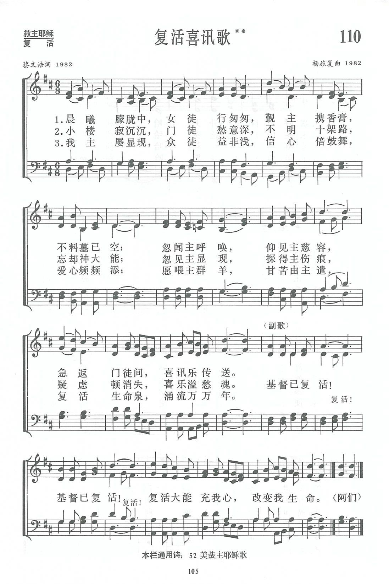

|
|
讚美詩(新編) 第110首《復活喜訊歌》 |
|
|
1.晨曦朦朧中，女徒行匆匆， |
|
https://www.zanmeishige.com/tab/13783.html?songbook=1&index=110
 |
|
|
|
|

https://youtu.be/TZBxLYCMykE
第110首 复活喜讯歌** _蔡文浩 In the hazy morning light
经文：“快去告诉他的门徒，说他从死里复活了……”(太28：7)。
这首诗是浙江蔡文浩牧师和他的夫人杨旅复同工合作的结晶。
蔡文浩生于1913年，1928年受洗归主。他毕业于上海沪江大学文学院，以后进南京金陵神学院，获神学士，1947年获美国普林斯顿神学院神学硕士。50年代时，他历任杭州之江大学校牧、中华基督教会浙江大会执行干事、全国总会副执行干事等职。1960年起，他担负起浙江省基督教的领导责任，是浙江省基督教三自爱国运动委员会主席兼浙江省基督教协会会长。198O年以后，他还担任中国基督教协会副会长。
杨旅复1916年生，1937年从苏州景海女校音乐专业毕业，1945年毕业于上海沪江大学社会系，后曾去美国威士明特合唱音乐学院进修。她除了在不少学校内担任过音乐教师外，对推进圣乐一贯努力，曾任中国基督教协进会音乐干事等。她在上海、杭州都担任教会唱诗班指挥，而且极其认真。1981年中国基督教圣诗委员会成立时，她被邀担任委员，并任《新编》编辑委员会委员。她利用暑假休息时间专程来沪，义务协助编辑工作，编辑部一度在杭州办公时，她更是积极投入，经常日以继夜忘我工作。本书初稿写成后，她抽空校阅，经常工作至深夜，用红蓝墨水，分别写出应修改的地方，还写出大量补充的材料。本书能以出版，得她帮助良多。
《新编》内由蔡文浩作词、杨旅复谱曲的圣诗有第11O、125、17O、331等四首。
此外，杨旅复还为第137、152首谱写了新曲调。第23、72、81、82首是她的译词。第381首是她的配词。
l981年，当《新编》编辑部同工建议他们夫妇二人写一首复活节用的诗歌时，蔡牧师欣然应允。他说：“这些年来，中国信徒见证了主复活的大能在教会中的作为，使中国教会从患难与困扰中出来，走到平安与喜乐之中。我们应该有自己的诗歌，来表达中国教会弟兄姊妹的心声。”
关于这首诗的构思过程，作者首先考虑复活节与圣诞节在内涵及表达方式上的不同。圣诞节主要是以欢乐的心情来庆祝主的诞生；复活节则是纪念主的舍身与复活，主要表达门徒们由伤感变为喜乐，由失望变为希望，由软弱变为刚强，最后献身于主，建立教会。因此他认为：“仅仅渲染复活节的欢乐气氛是不够的，复活节的诗歌应该刻划当时门徒们的灵程变化，来激励我们的信仰与生活，促进我们的灵命。”
这首诗的三节歌词好像三幅图画，重现了约翰福音所记载的耶稣复活后向门徒显现的三个情景。它们根据约翰福音第20章1至l8节(参可16：1一10；约20：19—29；21：1一2)，
分别叙述爱主的女门徒，特别是抹大拉的马利亚如何听闻主声，转悲为喜；
小楼上充满疑虑的门徒，因见主显现，坚定了信心；
彼得、约翰在提比哩亚海边，不但认出了主，而且重新接受喂养主小羊的差遣。
副歌反映门徒已经从愁苦中被释放，能够引吭高歌“基督已复活”。作者把“复活大能充我心，改变我生命”作结尾，去传达复活的喜讯。
杨旅复谱曲，很注重“反复朗读歌词，熟悉歌词，使乐思自然地进入词意”。这首诗的曲调很好地配合了歌词的进行。
此曲用的是6／8节拍，作者原意要求欢快，每小节作二拍子计算，不能唱得太慢。音值一长一短，类似欧洲的“船歌”，给人以行进向前的感觉，这就勾划出“女徒行匆匆”的形象。
前两行乐句的色彩是迷幻的，反映门徒在困惑中的探索。
第三行“忽闻主召唤，仰见主慈容”，音乐亦豁然开朗，发展至“喜讯乐传送”时，似乎乐曲已经可以结束。
可是主复活这件事给门徒内心的震撼实在太大，副歌亟需把这激情再加强。于是产生音调逐句上升的两次宣告“基督已复活”，以报喜的声调出现。结尾重复第四行的曲凋，使全曲达到有一个有力的完成。